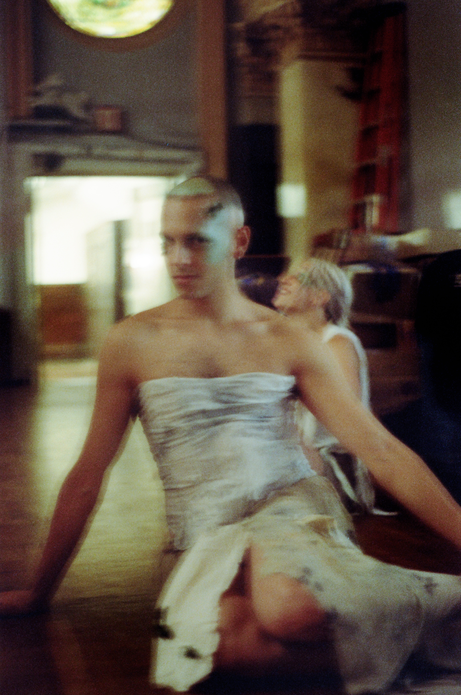
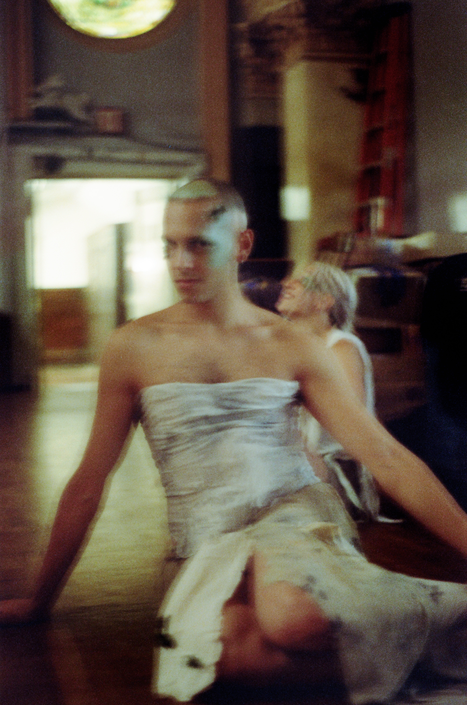

Company [REDACTED]
Upcoming Shows
Company [REDACTED]
Using fantasy as a guide towards creation, Mimi Doan & Cole Stapleton have been collaborating as choreographers since 2019. Expanding beyond the purely imaginary or erotic, Company [REDACTED] utilizes the fantasy of situation and circumstance, emotion and play to create dynamic worlds for their pieces. Their first evening-length work, Some Land of Redemption, premiered with two sold out performances at The Center for Performance Research in February of 2022, and since then they’ve been invited to present work at Impulstanz in Vienna, Movement Research @ Judson Church, Hannah Traore Gallery, and at dance festivals throughout New York City.
Performance Credits
My Apocalypse (excerpt)
My Apocalypse (full length premier)
My Apocalypse
My Apocalypse
My Apocalypse: Fruiting Bodies
My Apocalypse
My Apocalypse: Monster Cruising
Some Land of Redemption
Collaborators

Demetris Charalambous, Associate Director
Demetris Charalambous is a movement and performance artist from Cyprus. Their work investigates corporeal finitude and conceptual means of transcending it. Through a cross disciplinary practice they strive to find an aesthetic logic within compositional displacements of their body. They are based in Brooklyn, New York.

Valentina Baché Rodríguez
Valentina Baché Rodríguez(they/them) was born and raised in Playa del Carmen, Mexico. At 15 years old, they skipped high school, moved to Massachusetts to attend Bard College at Simon's Rock, and obtained an Associates Degree in Biology & Dance. Then with a deep yearning for more dance, they moved to NYC to attend Hunter College for a BA in Dance, graduating in 2020. Their works have been performed for incredible grassroots organizations throughout the city and at the Kaye Playhouse and Judson Church, as well as with the performance art group "Young boy dancing group" and many more. They wake up every day and forgive themselves, and with gentleness, they grow courage as willful hope. In addition, they have been developing satirical introspective movement journals exploring personal and societal absurdities. Navigating the turmoils of growing up queer and brown in a violent world. Yet, they have found the will to continue creating and seeking love in healing. They believe in the power of pleasure and joy through resilient, stubborn, and unbound honesty.

Amari Hutcheson
Amari Hutcheson is a 22 year old dancer from Wichita, Kansas. In her junior year she moved to study dance further at Interlochen Arts Academy and graduated with the Young Artist Award. Upon her admission into the Fordham/Ailey BFA program she received the Robert Battle full scholarship and performed works by Pedro Ruiz, Helen Simoneau, Brice Mousset, and Joanna Kotze. After graduating she worked with Dance Lab New York and had the privilege to work with Christian Denice, Will Ervin Jr., and Madison Hicks. She is excited to discover herself more through her exploration in dance.

Slic
Slic is a producer, songwriter, and performer. They were born in Venezuela and live and work in NYC.
Avery Gerhardt
Avery Gerhardt (she/her) is an independent choreographer and freelance performer from Houston, Texas. She began her pre-professional training at the High School for Performing and Visual Arts and graduated from the Boston Conservatory. Her long-term research project “loadbearing” (withstanding the weight carried by a structure), stimulates and situates itself in accordance with the ecofeminist movement. Avery is honored to include the acknowledgements of the arts communities in awards such as the Foundation for Contemporary Arts Grant (2021), the City of Boston’s Arts and Culture Opportunity Fund (2021), The Boston Foundation’s Next Steps for Boston Dance Grant (2022) and a Mass Cultural Council Fellowship (2022). She is currently based between Boston and NYC, where she continues to build a body of repertoire with her company Motlee Party, alongside her practice as a performer, dramaturg, and writer.
Photos


 
